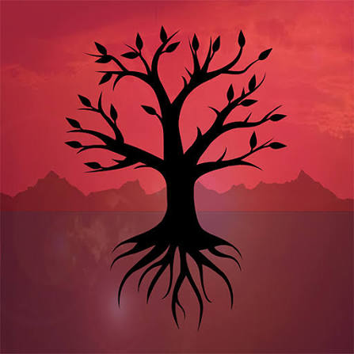

Home
Jogos
Ordem
Personagens
Universo
Sobre
Rusty Lake: Roots

“Expand your bloodline.”
Sobre o jogo
Rusty Lake: Roots é uma aventura de puzzles no estilo point-and-click que conta a história de várias gerações da
família Vanderboom. O jogador acompanha a construção da árvore genealógica da família e descobre como os
acontecimentos de uma geração influenciam as seguintes. Com uma narrativa não linear e cheia de simbolismos, o
jogo apresenta acontecimentos familiares, relacionamentos, nascimentos, mortes e rituais estranhos. Cada
capítulo acrescenta uma nova parte à árvore dos Vanderboom, revelando gradualmente os segredos que conectam a
família ao misterioso universo de Rusty Lake.
Informações
- Desenvolvedor: Rusty Lake
- Data de lançamento: 20 de outubro de 2016
- Plataformas: PC, Android, iOS
- Gênero: Aventura, Puzzle
História
A história começa em 1869, quando James Vanderboom chega à propriedade que herdou de sua família. Ao plantar uma
árvore no jardim, James inicia uma nova geração da família Vanderboom. A partir daí, o jogador acompanha
diferentes momentos da vida de seus descendentes, desde casamentos e nascimentos até acontecimentos cada vez
mais misteriosos e perturbadores. Conforme a árvore genealógica cresce, os segredos da família também se tornam
mais profundos. As decisões e acontecimentos de uma geração acabam influenciando as próximas, criando uma grande
cadeia de eventos que atravessa décadas. Ao completar os diferentes capítulos, o jogador descobre como os
Vanderboom estão ligados a personagens e acontecimentos importantes de Rusty Lake.
Personagens
- James Vanderboom — O personagem que inicia a nova linhagem dos Vanderboom. Ele chega à propriedade da
família em 1869 e planta a árvore que simboliza o início de sua história.
- Mary Vanderboom — Esposa de James e uma das primeiras integrantes da nova geração da família.
- Gerard Vanderboom — Um dos descendentes da família, envolvido nos acontecimentos que atravessam as
diferentes gerações.
- Albert Vanderboom — Um dos personagens mais importantes e perturbadores da família. Sua história está
relacionada a acontecimentos que possuem consequências para gerações futuras.
- Rose Vanderboom — Filha de Albert e uma personagem importante para a continuidade da família. Sua história
também possui conexão com acontecimentos futuros do universo Rusty Lake.
- Leonard Vanderboom — Membro da família Vanderboom e personagem que participa de diferentes acontecimentos
ao longo da árvore genealógica.
- Emma Vanderboom — Uma das integrantes da família e personagem envolvida nos relacionamentos e
acontecimentos que formam a árvore dos Vanderboom.
- Samuel Vanderboom — Descendente da família e participante de diversos acontecimentos familiares
apresentados durante o jogo.
- Ida Vanderboom — Personagem ligada à família e aos acontecimentos sobrenaturais que aparecem ao longo da
história.
- Frank Vanderboom — Um dos membros da família apresentado durante a sequência de gerações dos Vanderboom.
- Laura Vanderboom — Uma das personagens mais importantes de todo o universo Rusty Lake. Sua história está
diretamente ligada à família Vanderboom e aos acontecimentos apresentados em outros jogos.
Voltar